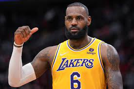

KOSZYKÓWKA
Moim hobby jest koszykówka, bardzo popularny sport na świecie. Najwyższy poziom koszykówki na świecie jest w Stanach Zjednoczonych. Liga nazywa się NBA. 30 drużyn jest w tej lildze. Zazwyczaj jest jedna drużyna na jednol miasto, ale wyjątkiem jest Los Angeles gdzie gospodarzami są Los Angeles Lakers i Los Angeles Clippers. Rozgrywki NBA dzielą się na 2 konferencje. Na konferencje zachodnią i konferencje wschodnią. Konferencja zachodnia dzieli się na Pacific Division, Southwest Division, Northwest Division. A konferencja wschodnia dzieli się na Atlantic Division, Central Division, Southeast Division. Po 5 drużyn w każdej dywizji. Każda drużyna gra 82 mecze w sezonie. 8 drużyn z najlepszym bilansem z konferencji zachodniej i 8 drużyn z najlepszym bilansem z konferencji wschodniej grają w play-offach.
W finale play-offów wybierany jest MVP Finałów z wygranejk drużyny. Raz zdarzył się wyjątek się wyjątek w 1969 r. Jerry West wygrał nagrode Finals MVP jako zawodnik przegranej drużyny. Podczas wakacji jest organizowany DRAFT gdzie młodzi zawodnicy są wybierani przez drużyny. W jednym drafcie jest wybieranych ok. 60 zawodników. Jako najbardziej utalentowany draft class uważa się draft z 1996 r. lub z 2003 r.
LeBron James jest uważany za najlepszego zawodnika NBA w historii. Jednym z największych sukcesów LeBrona Jamesa jest rekord zdobytych punktów w historii NBA. W ostatnim sezonie przebił rekord Kareema Abdula-Jabbara. LeBron James był 8 lat z rzędu w finałach NBA. Z czego 2 razy grał przeciwko najlepszej drużyniue w historii. LeBron w 2016 dokonał niemożliwego, wygrał Finały NBA początkowo przegrywając 3-1 przeciwko Golden State Warriors które w tamtym sezonie miało rekordowy bilans 73-9. LeBron James jest w prawie każdej statystyce w najlepszej 10 w historii NBA. Jeremy Sochan jest 4 polakiem grającym w NBA, przed nim był Cezary Trybański, Maciej Lampe i Marcin Gortat. Największym osiągnięciem Michaela Jordana jest to, że ludzie porównujką go do LeBrona Jamesa.
 Informacje o NBA